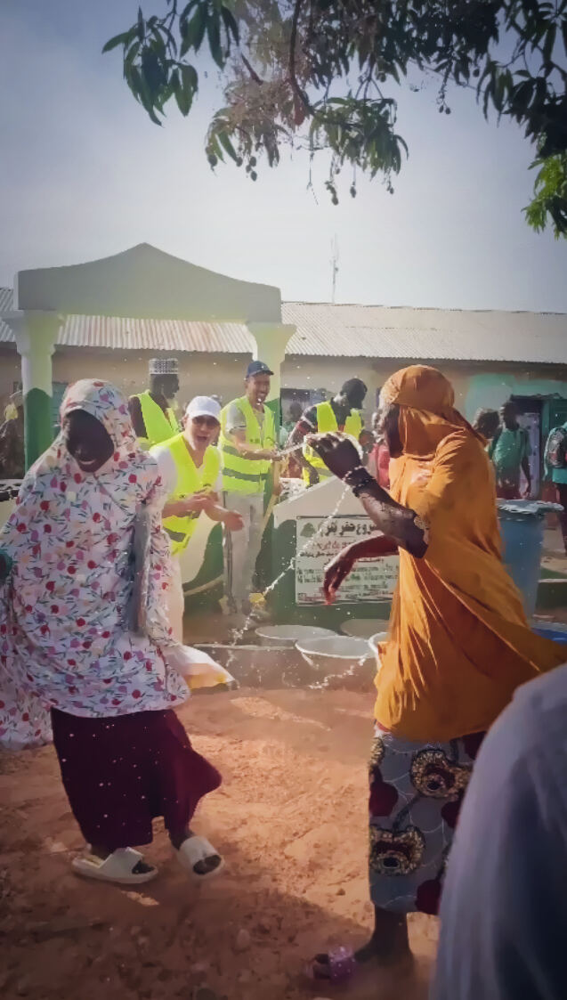

Eau
Sadaqa jariyaÉligible zakat
Afrique de l'Ouest (à préciser)
Forer des puits d'eau potable
Un puits donne de l'eau propre à tout un village, pour des années.
3 150 € sur 8 000 €39 %
Choisissez le projet qui vous tient à cœur. Les projets marqués « Sadaqa jariya » sont des bienfaits durables ; ceux marqués « Éligible zakat » peuvent recevoir votre zakat.
Un puits donne de l'eau propre à tout un village, pour des années.

Des colis de base pour nourrir une famille pendant plusieurs semaines.
Des classes rénovées, des cartables et des fournitures pour chaque élève.
Des médicaments et des soins là où il n'y a ni pharmacie ni médecin.

Repas chauds, vêtements et écoute dans les rues de Bruxelles.
Vous nous laissez choisir le projet le plus urgent du moment.